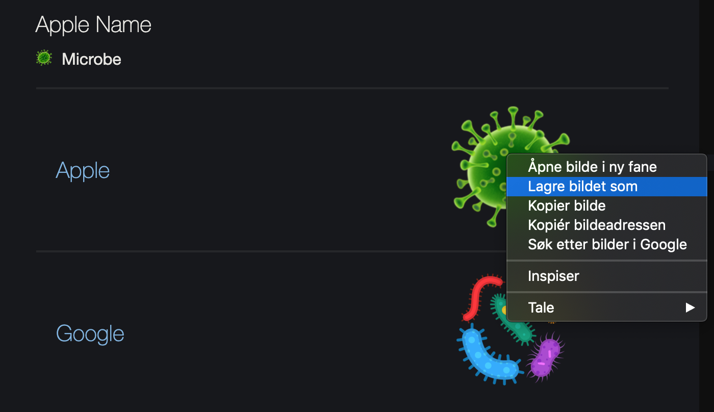

Hva vil du helst se her? Send meg en mail og mas i vei :)
Favicon
Favicon er navnet på det lille ikonet som vises ved siden av tittelen til nettsiden i faner, eller når man lagrer den som et bokmerke.
Til denne nettsiden laget jeg et favicon slik:
Valgte et ikon
Jeg var lat og fant en emoji jeg ville bruke på emojipedia.org. Du kan også lage ditt eget ikon. Lagre som PNG, JPG eller BMP.

Konverterte til .ico-fil
På icoconvert.com/ kan du laste opp bildefiler for å konvertere dem til .ico-filer, som er standarden for favicon.
Du trenger ikke forholde deg så mye til valgene nedover på siden, bare last opp en fil, og scroll helt ned til "step 5" der det står "Convert ICO". Klikk på denne og last ned.
Endre navn til favicon.ico
Legg favicon.ico-fila i samme mappe som index.html
Legg til i HTML-fila
Legg til følgende linje under tittel i head-tagen for å fortelle HTML-filene dine at ikonet skal importeres: